Hola mi niña hermosa, que mejor manera de representar tanto amor que siento por ti que dejando una huella en el internet de manera permanente?, mientras hago esto, trasnochando un poco mientras pienso en cuanto te amo, creeme que me siento muy relajado y feliz y espero que esto salga demasiado bien, hacer una pagina web funcional si que es dificil, pero no tienes idea de como me encanta, tu te mereces mas que eso amor mio, asi que en esta pagina web quiero que quede claro que eres mi todo y que lo hago con todo mi amor, animo mi vidaaaa, toca todo lo que veas, prueba mi conocimiento con los botones, interactua, usa todo lo que veas y sobre todo reacuerda que te amo mi amor, que has marcado mi vida de una manera inigualable y en unos años quiero que en proximos proyectos de mi vida tu estes ahi, que seas mi mayor reconocimiento especial, hasta en mi tesis de grado quisiera ponerte, me encantas mi vida y no se hasta donde hemos llegado pero si se hasta donde vamos a ir, contigo lo deseo todo y espero que te tomes el tiempo para leer esto mientras yo me termino de secar las lagrimas, lo mas dificil fue darle forma a esto jijiji, ahora lo mas chevere es llenarlo de cosas sobre nosotros, Mucha suerte con esto... Mi corazon de melon 💖
Nuestra Historia
Aun recuerdas ese dia que nos hicimos novios?, yo recuerdo cada dia que hemos pasado como si fuera ayer, puedo ser alguien aveces despistado pero adoro detallar todo, recuerdo que lo que mas me gustaba de ti era tu manera de ser, tan tu, despreocupada de como fuera lo demas, me encantaba saber que tenias Hobbies antes de ser novios, alguna vez te vi bailando y me encanto, tienes mucho talento que me encantaria que fortalezcas, Te amo mi niña hermosa, y adoro cada momento que hemos tenido, adoro todooooo de ti dios mio, eres mi mayor apuesta en esta vida porque en ti si que veo una persona brillante, llena de proposito, de amor... de cariño, de comprension, aunque en algun punto de tu vida te haya faltado tanto, jamas dejare que te falte de nuevo por eso adoro tanto estar para ti mi niña hermosa, quiero ser esa mano derecha siempre en tu vida, quiero ser lo que mas amas, quiero que seas siempre ese sueño que tanto anhele, quiero ser tu homrbo para que puedas decansar los males de este mundo y cuidarte en mis brazos para que nada te falte, te amo mi niña hermosa, te amo y adoro ser empalagoso contigo, que tal que mañana ya no estes?, cuando seamos viejitos quiero saber que siempre aproveche cada frase, cada oportunidad para decirte que te amo y que me fascinas y que he tenido a la mejor mujer del mundo porque me has demostrado que se puede todo a pesar de los tropiezos y obstaculos, por eso no quiero jamas dejar que te rindas mi niña, juntos tu y yo como dice la cancion que estas escuchando, un equipo dinamita 🧨
Momentos Juntos
De nuestras primeras fotos ❤️Tus peinados hermososAmo cuidar tu niña interior 🧸
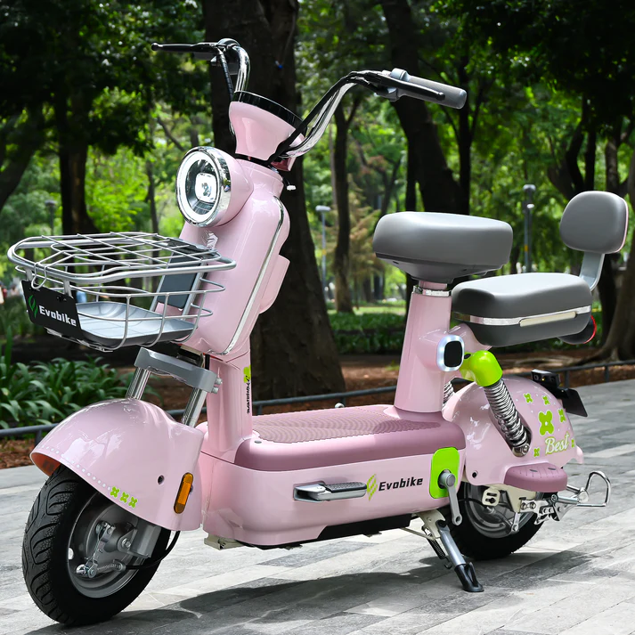
Con ella comenzo un nuevo sueño para ti🌸Ese hermoso dia que cumplimos un sueño
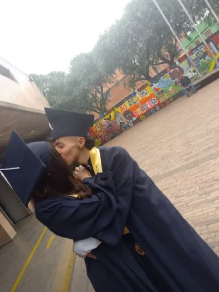
y lloramos ese diaaaaLo hermoso que te quedo el uniforme❤️
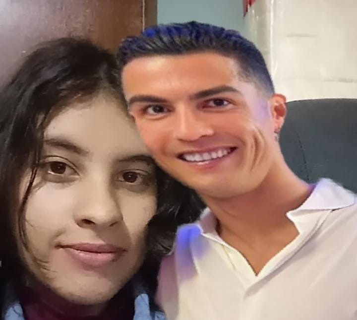
SIUUUUUUUU
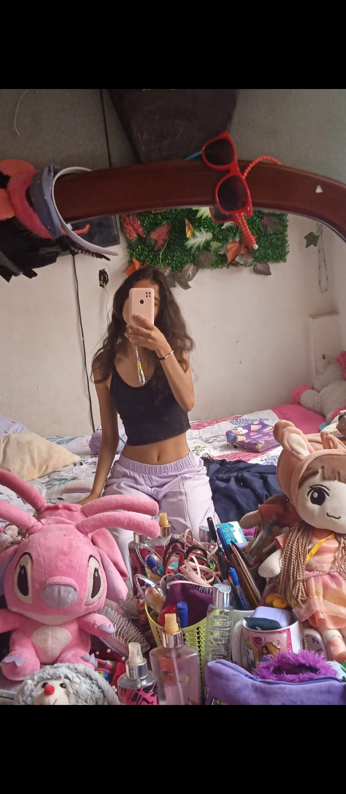
¿Como puedes ser tan hermosa?El milagro de tu uni :c
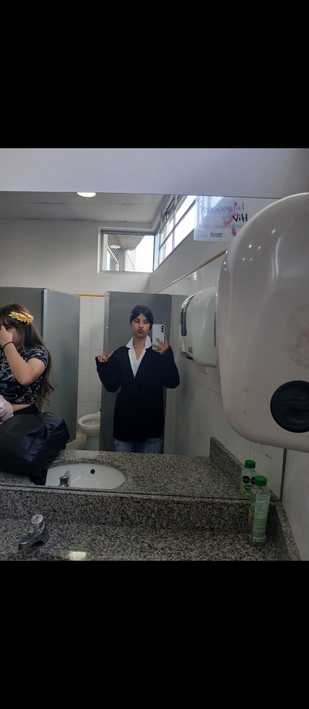
DIOS MIO, QUE ORGULLOSO ESTOY DE TITORTUGUITA DEL AMOOORRRLo mas hermoso de mi vida, mi niña pequeñaMis pequeñas lindas
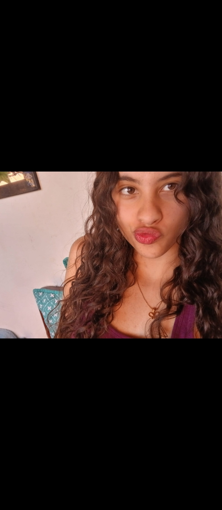
¿Como puedes ser tan hermosa? x1000000
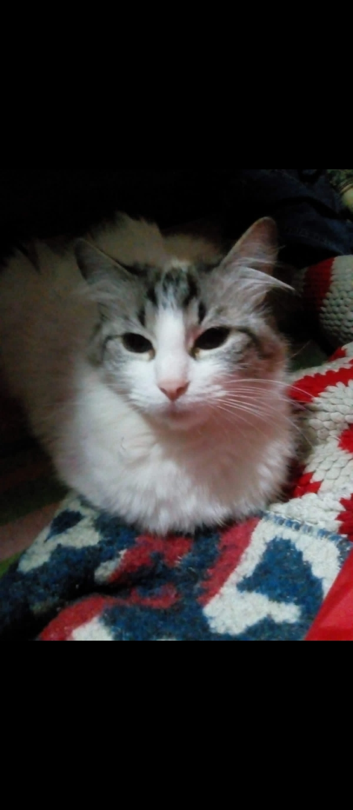
Nuestra niña...
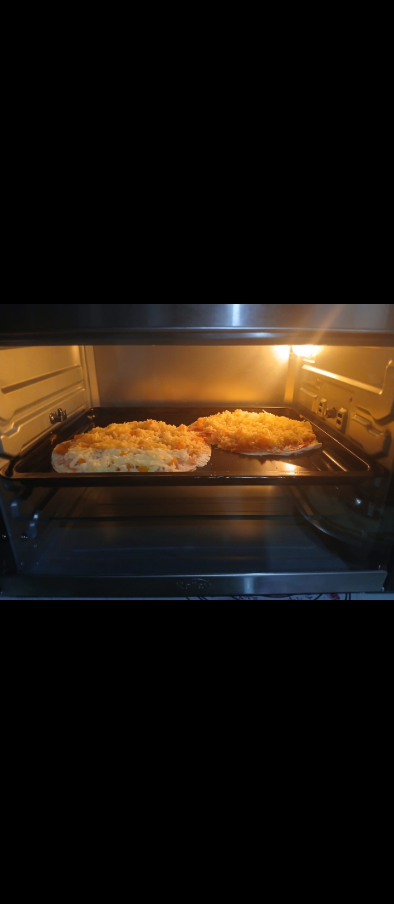
ADORO COCINAR, CON LA MEJOR CHEFF Y FUTURA PROFESIONALNUESTRO PRIMER BEBE
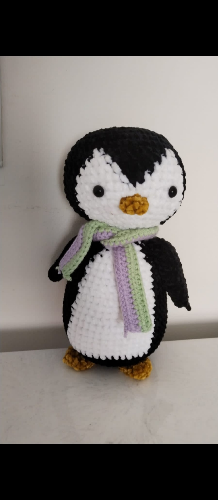
NUESTRO MEMEEEEEEEEEEEEEAMO TANTO ESTOS DIAS CONTIGO
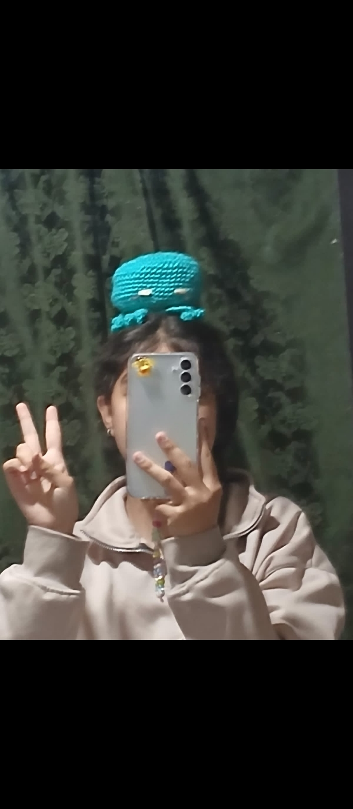
OTO MEME A LA FAMILIAAAAAY ES QUE TE AMOOOOOOO, llevo dias llorando mientras recuerdo todo como el dia de ayerCAFE LITERARIOOOOOOOOOOOO!!!!!!!!!
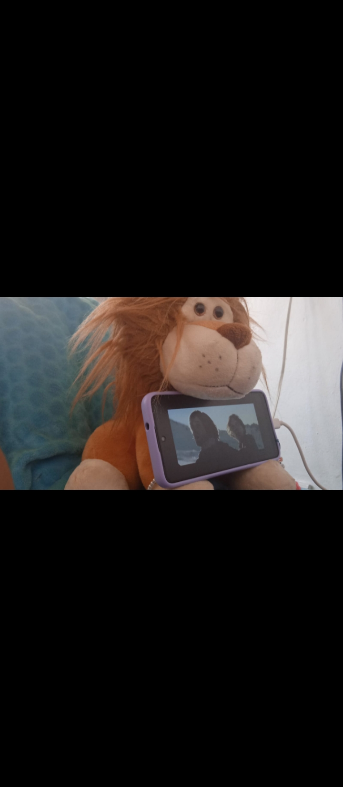
AMO A TODOS NUESTROS BEBEEEEESSS
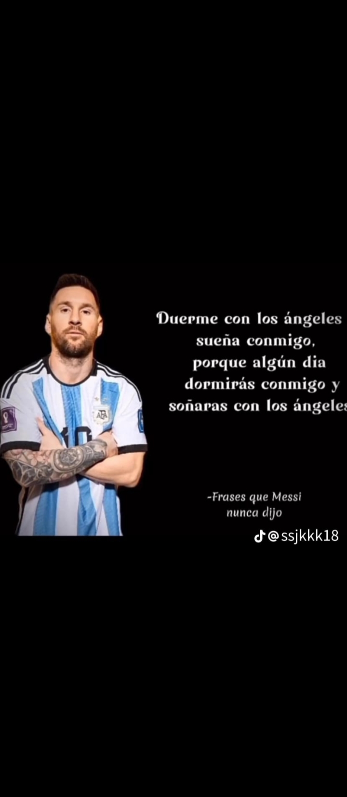
FELICES TRES AÑOS BELLO AMOR DE MI VIDAAAAAAAAAAAAAAAAAAA
POR ESTOS #3 AÑITOS Y LOS QUE FALTAAAN
Mi niña hermosa, me has dado los mejores días de mi vida, he aprendido contigo tantas cosas de la vida a un ritmo tan diferente al que tenía acostumbrado mi existir, gracias por tanto, creeme que me has dado cosas invaluables en esa vida y quisiera pasar el resto de mis días contigo, darte todo mi amor como siempre he intentado hacerlo, cuidar de tu hermoso corazón, te conocí siendo una hermosa niña pequeñita, una ternurita, los tiempos de Dios son perfectos, eres lo mejor que me ha pasado en la vida y llegaste justo a tiempo como yo para ti, estoy orgullosisimo de ti, estoy enamorado de tu proceso, de todo lo que has luchado, eres mi ejemplo a seguir mi niña y María Fernanda Castrillón Ruiz está orgullosa cada día de ti, los frutos que hoy disfrutas y vuelves a sembrar fueron días demasiado tristes en el pasado, todas esas lagrimitas han creado bloques en el muro de tus emociones, esas frustraciónes, los días que no viste salida y hoy puedes decir que si la tenían son gracias a esa Mafesita que confío siempre en su misma incluso cuando nadie estaba, siempre estaré para ti mi niña hermosa, siempre mi corazón, jamás te dejare pase lo que pase, tus lágrimas son mi vida y te daré ese amor que tanto te hizo falta algún día, porque conmigo jamás te volverá s pasar, te amo María Fernanda de Coronado Castrillón, edta Mafesita está orgullosa de ti :)))))), así como yo, siempre mira adelante, los que más tr amamos siempre te resguardamos, no estás sola jiji, los angelitos del cielo siempre te protegerán como yo también porque se que cada uno de esos seres queridos te ama inmensamente, es imposible recopilar tantos momentos contigo y amo eso, porque esto no acaba aqui, te amo dulce niña de mis ojos, Maria Fernanda de Coronado Castrillon 💍